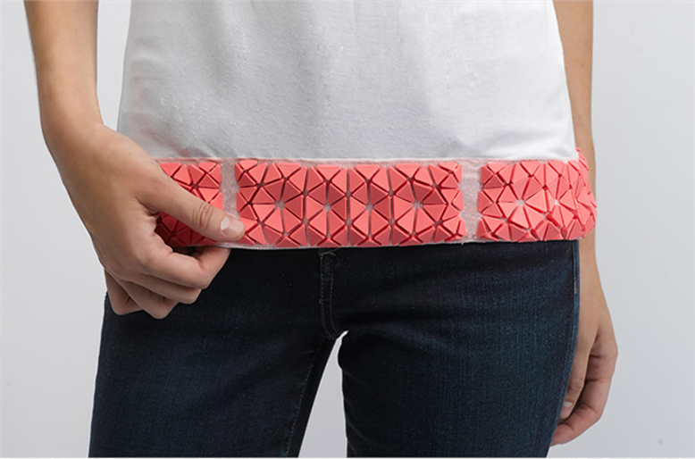

The purpose of this paper is to investigate the adhesion of polymer materials printed directly onto fabrics using entry-level fused deposition modelling (FDM) machines. A series of functional and decorative parts were designed to explore the limitations and to identify potential applications.
Design/methodology/approach
A series of shapes and structures were designed as 3D computer-aided design (CAD) solids to determine whether complex parts could be printed directly onto the surface of fabrics. The structures were fabricated using an entry-level FDM printer with acrylonitrile butadiene styrene, polylactic acid (PLA) and nylon on eight different types of synthetic and man-made woven and knit fabrics. The results were recorded according to four parameters – the warp, bond, print quality and flex – before comparing the data sets.
Findings
Among the three polymers, PLA showed the best results when printed on the eight different types of fabrics, having extremely good adhesion with little warp, yet displaying a high quality of print with good flexural strength. For the fabrics, woven cotton, woven polywool and knit soy had excellent adhesion when the three polymers were deposited.
Research limitations/implications
Future work should cover a wider range of polymers and textiles and incorporate more functional features for testing. Other aspects include modifying the fibre surface through mechanical or chemical means to achieve a more efficient adhesion with the fibre and examining the deposition process in terms of temperature, pressure and build density. Future work should also investigate the feasibility for large-scale production.
Practical implications
This paper supports work on wearable electronics by integrating comfortable textiles with hard wearing parts without compromising on quality and fit and combining additive manufacturing processes with textiles to maintain the drape characteristics of the fabric. Polymer–textile deposition will contribute to new applications and functional products such as orthopaedic braces for medical use or for decorative features such as buttons and trimmings for garments.
Originality/value
This paper has contributed to new knowledge by providing a better understanding of polymer materials being printed directly onto fabrics using entry-level FDM machines.
 3d open textilesEujin Pei, Jinsong Shen, Jennifer Watling, (2015) "Direct 3D printing of polymers onto textiles: experimental studies and applications", Rapid Prototyping Journal, Vol. 21 Issue: 5, pp.556-571, doi: 10.1108/RPJ-09-2014-0126.